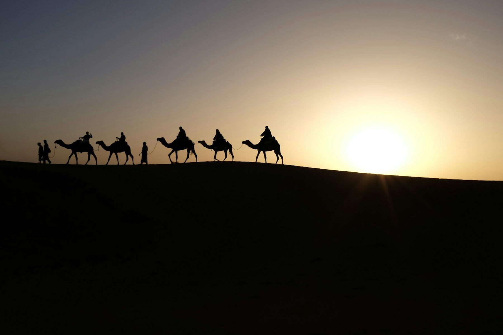
Viaggi che ti
restano addosso.Ritiri in viaggio, in piccoli gruppi, nei posti più potenti del mondo
Una settimana nel deserto del Marocco o lungo il Nilo, in un piccolo gruppo che parte da sconosciuti e torna da amici.
Un viaggio per scoprire un posto nuovo. Un ritiro per ritrovare te.
Un viaggio autentico
Attraversiamo dune, templi e villaggi insieme alle persone che ci vivono, e nel frattempo pensiamo noi a tutto il resto, dagli alloggi ai trasporti, dai pasti alle guide locali.
Un ritiro profondo
Ogni giorno c'è spazio per la pratica, per un po' di silenzio e per un cerchio serale in cui raccontarsi. Non serve nessuna esperienza, perché le pratiche sono pensate per chiunque, anche per chi non le ha mai provate.
Un gruppo connesso
Siamo un piccolo gruppo, quindi si parte da sconosciuti ma quasi sempre si torna da amici. E quando il viaggio finisce la community continua, con incontri e serate nelle vostre città.
Questi ritiri sono per te se...
Se ti sei riconosciuto in almeno una, sei già uno di noi: un Viaggiatore Itinerante.
Dove andiamo
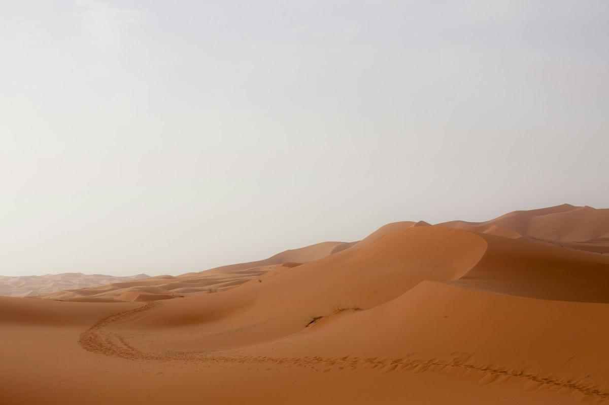
Marocco · Desert Way
Impegno fisico 4 su 5Da Marrakech al Sahara: dune, notti in tenda e cieli pieni di stelle.
Scopri il viaggio →
Egitto · La Via del Nilo
Impegno fisico 1 su 5Da Luxor ad Assuan su una barca a vela, tra templi antichi e villaggi nubiani.
Scopri il viaggio →
Turchia · Valli di Pietra
Impegno fisico 3 su 5In Cappadocia, tra rocce a forma di camino, città sotterranee e mongolfiere all'alba.
Scopri il viaggio →Com'è andata la prima volta
Aprile 2026, la prima partenza nel deserto. 14 persone che non si conoscevano, sette giorni da Marrakech al Sahara.
Abbiamo camminato in silenzio sulle dune, mangiato e riso con le guide berbere che ci hanno accompagnato, guardato il cielo più pieno di stelle che avessimo mai visto.
Nei cerchi della sera qualcuno ha detto ad alta voce cose che non aveva mai detto a nessuno. Intorno al fuoco abbiamo riso fino alle lacrime. Le due cose stanno benissimo insieme.
Siamo tornati con domande migliori di quelle con cui eravamo partiti. E con un gruppo WhatsApp che non si è più fermato.
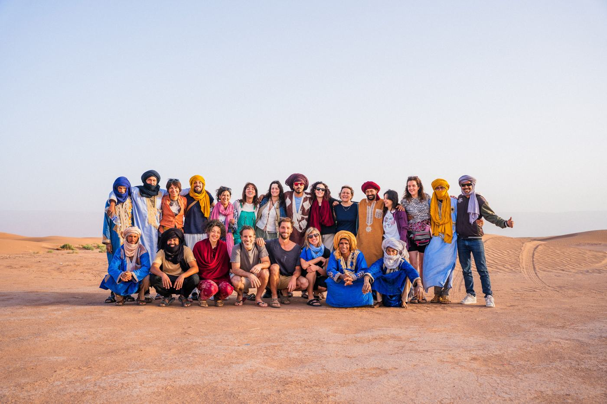
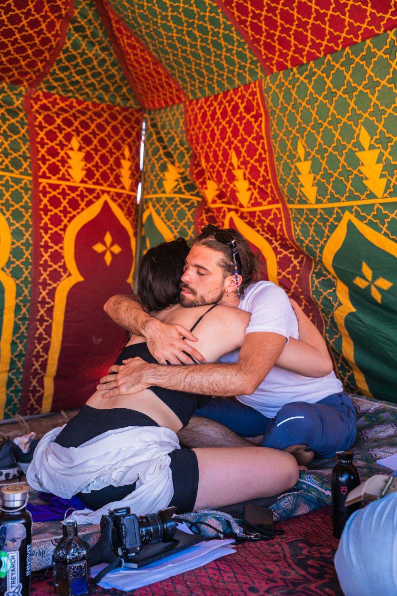
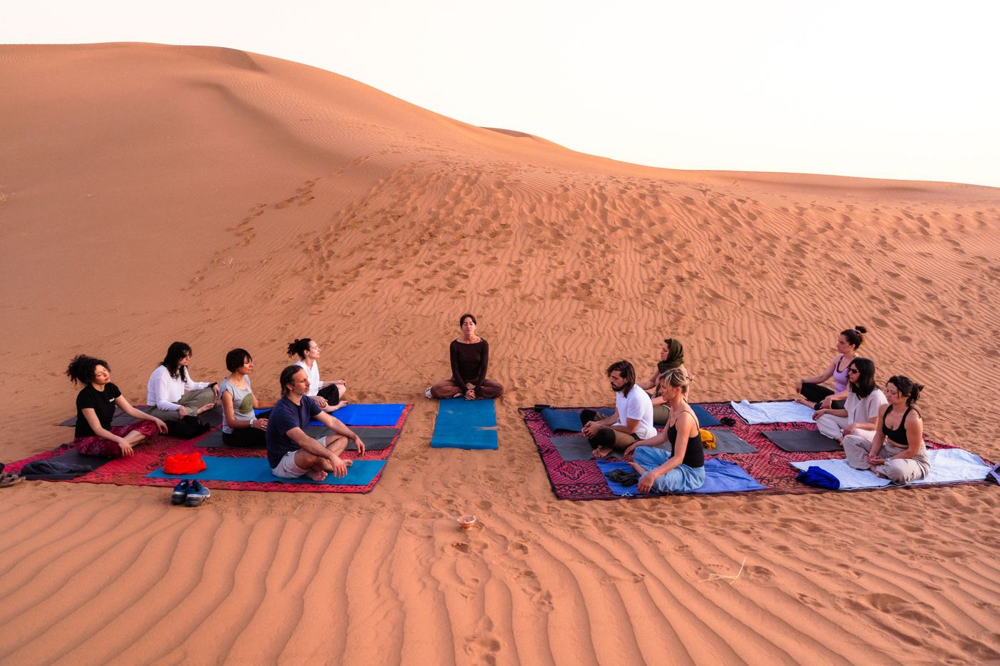
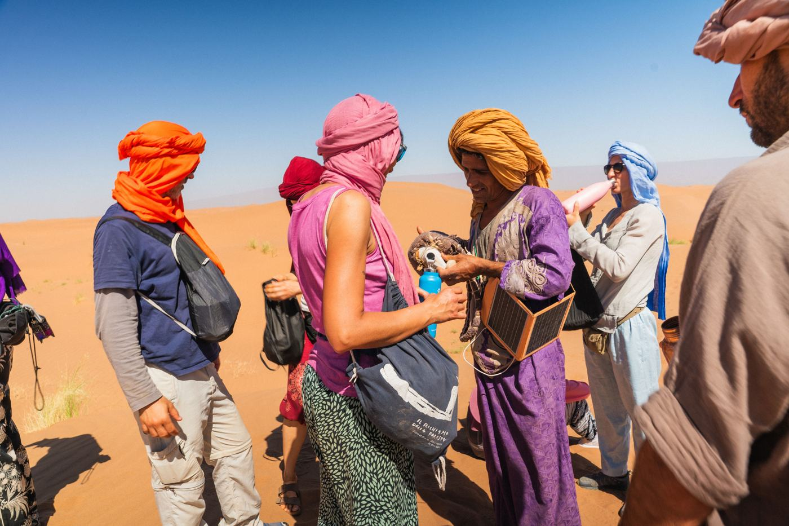
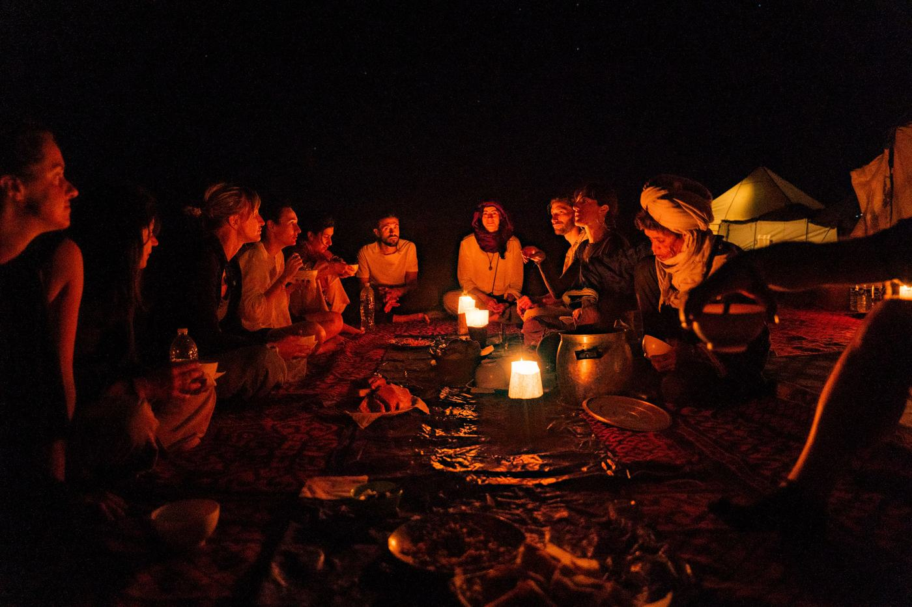
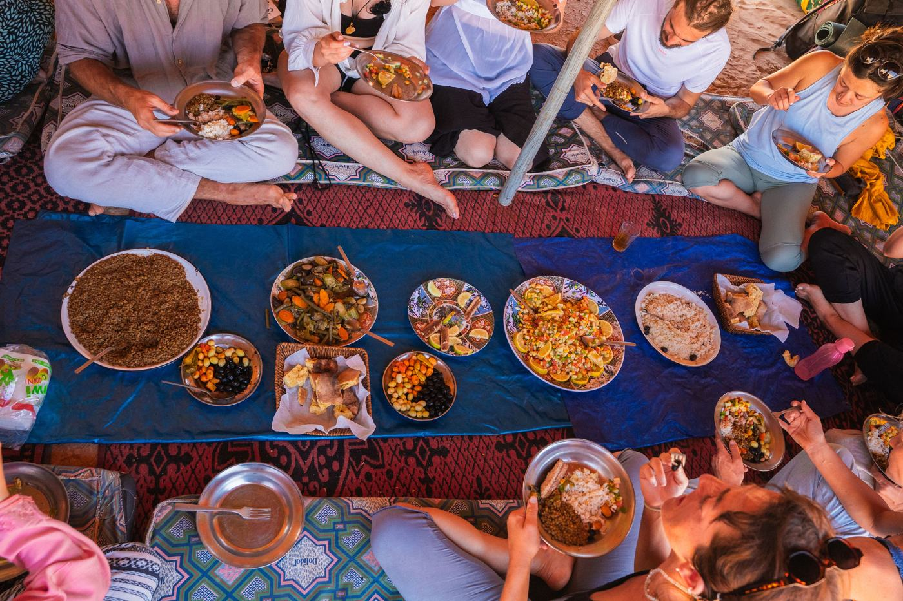
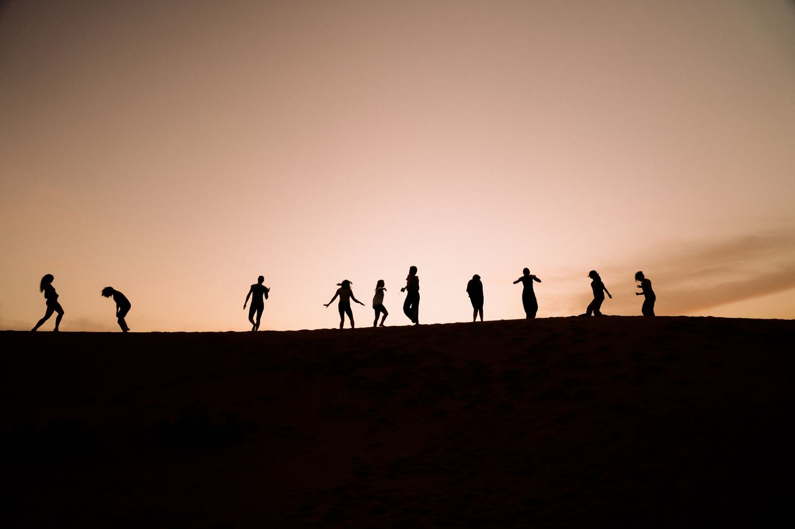
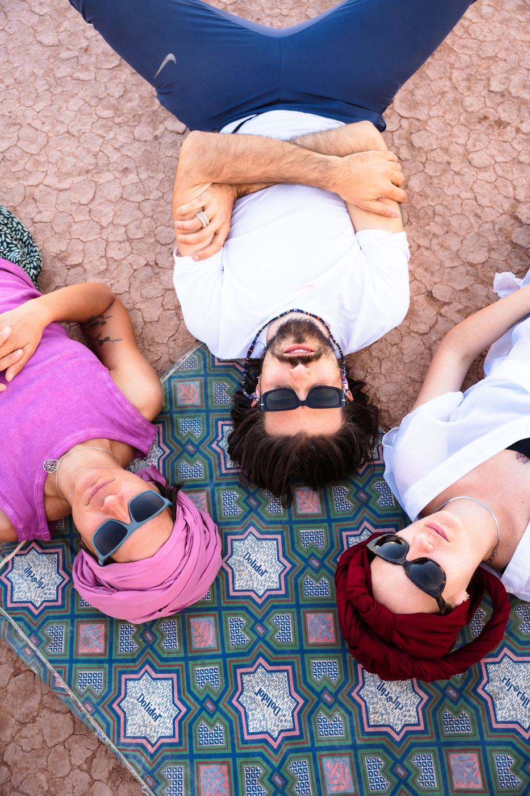
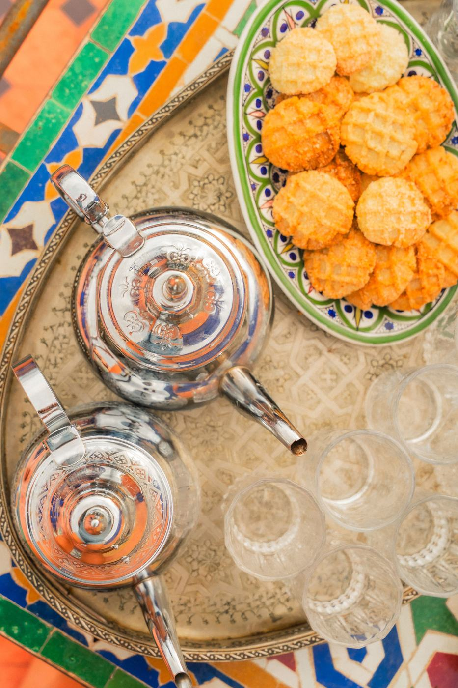
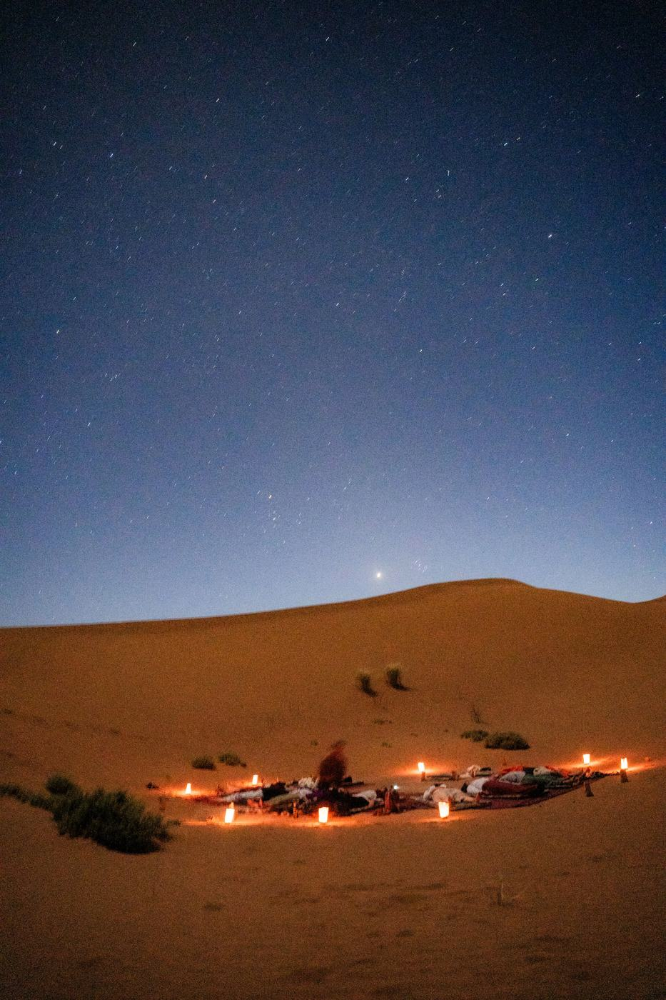
I camminatori ti dicono la fatica del viaggio
Le pratiche sono adatte a tutti, anche a chi non le ha mai fatte, quindi da un viaggio all'altro cambia soprattutto l'impegno fisico, cioè quanto si cammina, che comodità si trovano la sera e che clima ti aspetta. Per capirlo a colpo d'occhio basta contare i camminatori: più ce ne sono, più il viaggio è impegnativo.
Prossime partenze
Ogni data viene confermata quando si raggiunge il numero minimo di iscritti, e se il gruppo non dovesse formarsi ti proponiamo un'altra data oppure ti restituiamo tutto quello che hai versato.
Tre passi, al resto pensiamo noi
Scegli e scrivici
Scegli tra il deserto del Sahara e il Nilo e mandaci la richiesta per la data che ti interessa. Entro 48 ore ti scriviamo per una breve chiamata, e se il viaggio fa per te blocchi il posto con l'acconto.
Vivi il ritiro
Prima di partire ci conosciamo con una chiamata di gruppo, poi durante il viaggio la mattina si pratica, di giorno si esplora e la sera ci si racconta in cerchio. Nella quota è incluso tutto tranne i voli e l'assicurazione.
Resta nella community
Un mese dopo il ritorno ci rivediamo online, e quando in una città siamo abbastanza organizziamo anche serate dal vivo.
Scegli come vuoi esplorarti
Ogni partenza ha la sua pratica. Per ora partiamo con le discipline che portiamo noi due, e una per una ne arriveranno altre, insieme ai facilitatori che le guidano. Puoi anche suggerircene tu.
Breathwork
Il respiro come strumento per sciogliere tensioni e ritrovare energia.
Yoga
Pratica all'alba sulle dune o sul ponte della barca, per qualsiasi livello.
Meditazione
Silenzio guidato, anche per chi non è mai riuscito a stare fermo cinque minuti.
Coaching
Domande giuste e cerchi di condivisione per mettere a fuoco cosa vuoi.
Lavoro somatico
Ascoltare il corpo per capire cosa ti sta dicendo, prima della testa.
Astrologia
Una settimana a leggere il cielo del deserto, dove le stelle si vedono davvero.
Sound healing
Campane, tamburi e voce per rilassarsi in profondità.
Cammino in silenzio
Giornate intere a piedi senza parlare, per sentire cosa resta.
Ti manca una disciplina, o un posto?
Sogni una settimana di sound healing in Islanda, o di astrologia nel deserto? Raccontaci la tua idea. Se diventa una partenza, ti scriviamo per primo e il tuo posto ha uno sconto.
Grazie! Leggiamo tutto, e se la tua idea diventa un viaggio sei il primo a saperlo.
Un mondo da esplorare, e tanti modi per ritrovarti
Ogni destinazione ha più partenze, e ogni partenza ha il suo facilitatore e la sua pratica. Lo stesso deserto può essere un ritiro di yoga all'alba sulle dune, oppure una settimana a leggere il cielo con un'astrologa. Il Nilo può diventare un viaggio di breathwork, di meditazione o di suono.
Il viaggio fuori lo scegli con la destinazione. Quello dentro, con la disciplina che senti più tua: yoga, breathwork, meditazione, astrologia, sound healing, coaching, cammino in silenzio.
Quello che resta uguale è la struttura: ogni giorno un momento di pratica, spazio per il silenzio e un cerchio la sera per condividere. E puoi partire anche se non hai mai srotolato un tappetino in vita tua.
Le domande che ci fate più spesso
Che cos'è un ritiro itinerante?
Un ritiro itinerante unisce un viaggio vero a un ritiro di yoga e meditazione. Durante il giorno ci spostiamo ed esploriamo, per esempio tra le dune del Sahara o lungo il Nilo, mentre la mattina presto e la sera ci fermiamo per praticare breathwork, yoga e meditazione e per ritrovarci in cerchio. In questo modo si torna a casa con un posto nuovo negli occhi e con qualcosa di nuovo anche dentro.
Serve esperienza di yoga o di meditazione?
No, non serve nessuna esperienza. Le pratiche sono pensate anche per chi non ha mai fatto yoga, breathwork o meditazione, e nessuno ti chiederà di fare qualcosa che non ti senti. Chi pratica da anni trova comunque spazio per andare in profondità.
Posso partire da solo o da sola?
Certo, ed è quello che fa la maggior parte delle persone. I gruppi sono piccoli, e prima della partenza facciamo una chiamata di gruppo e apriamo una chat, così quando arrivi conosci già qualcuno.
Quanto costa un ritiro nel deserto del Marocco?
La quota del Desert Way è di 1.400 €, ma fino al 31 dicembre 2026 c'è il prezzo early bird di 1.250 €, e comprende sei notti tra riad e tende nel deserto, tutti i pasti, i trasporti tra Marrakech e il Sahara, il trekking con i dromedari e tutte le sessioni di breathwork, yoga e meditazione. Restano fuori i voli, l'assicurazione di viaggio e le spese personali.
I voli sono inclusi?
No, i voli non sono inclusi, perché così ognuno può partire dall'aeroporto più comodo e scegliere la compagnia che preferisce. Ti aiutiamo noi a capire quali voli prendere, e il transfer dall'aeroporto all'arrivo è già compreso nella quota.
Quando sono le prossime partenze?
Il Desert Way in Marocco parte dal 21 al 27 aprile 2027 e di nuovo dal 21 al 27 ottobre 2027. Il viaggio in Egitto lungo il Nilo partirà a novembre 2027 e a febbraio 2028, con date esatte che annunceremo presto, mentre la Cappadocia arriverà nel 2028.
Che cos'è il breathwork?
Il breathwork è un insieme di tecniche di respirazione consapevole che aiutano a regolare il sistema nervoso, a sciogliere le tensioni e a entrare in contatto con le emozioni. Nei nostri ritiri lo guida Fabio, che lo affianca allo yoga e alla meditazione di Flavia.
Come si prenota?
Scegli la partenza e compila la richiesta: entro 48 ore ti scriviamo per fissare una breve chiamata conoscitiva, in cui rispondiamo alle tue domande e capiamo insieme se il viaggio fa per te. Se è così, blocchi il posto con l'acconto.
Diventa un Viaggiatore Itinerante
Chi fa parte della community scopre per primo le nuove destinazioni, le date appena aperte e le serate dal vivo nella sua città. E ti promettiamo che non riceverai spam.
Benvenuto tra i Viaggiatori Itineranti! Ti scriviamo presto con le novità sui prossimi viaggi.